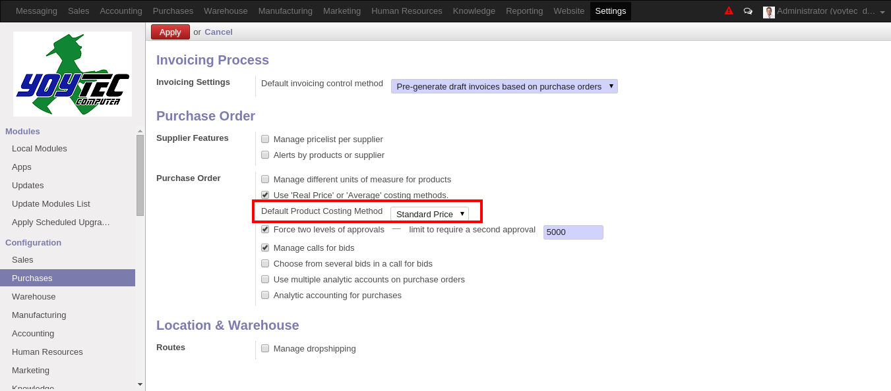

<section class="oe_container">
    <div class="oe_row oe_spaced">
        <h2 class="oe_slogan">Costing Method Settings</h2>
        <h3 class="oe_slogan">Set product default cost method</h3>
        <div class="oe_span6">
            <p>
                This module extend the purchase configuration wizard to add a
                new item that let to set the product default cost method.
            </p>
            <p>
                Note: When set the default cost method the
                <code>Use 'Real Price' or 'Average' costing methods.</code>
                option will be actived if is not alredy active.
            </p>
        </div>
        <div class="oe_span6">
            
        </div>
    </div>
</section>
